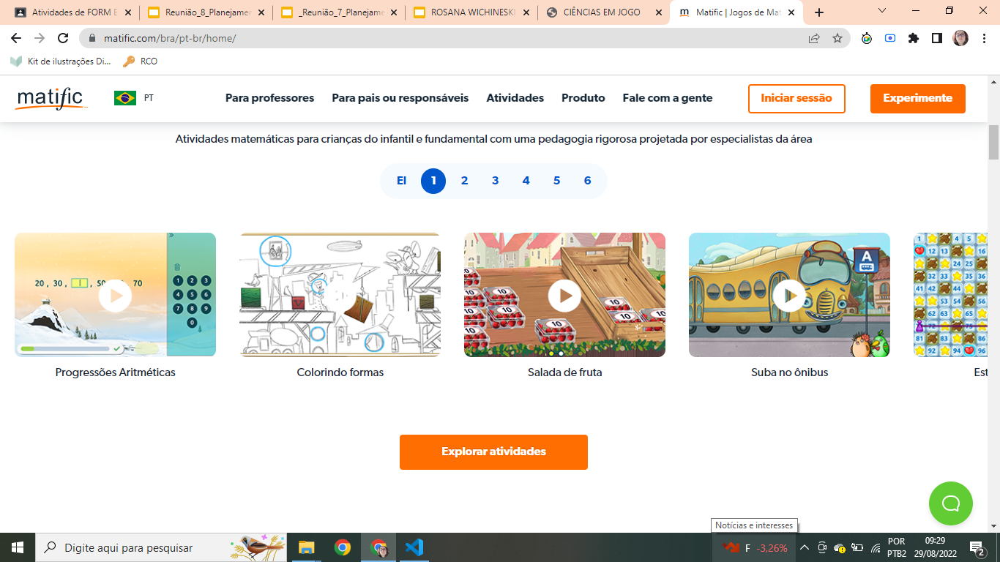
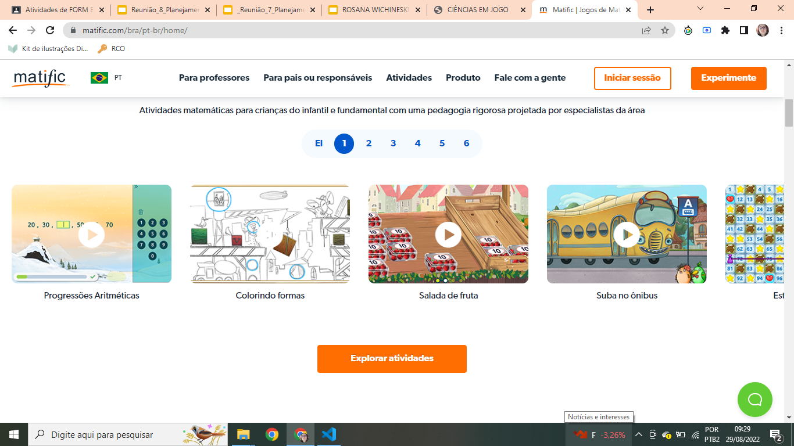

CIÊNCIAS EM JOGO
CIÊNCIAS EM JOGO
Gamificar em sala de aula é um dos grandes desafios dos professores contemporâneos. Pode-se gamificar de ao menos duas maneiras: gamificação por ferramentas e gamificação de processos.
Gamificação por Ferramentas
Quando você utiliza jogos prontos, com objetivos, metas, desafios, insígnias etc., com intuito de aprender um conteúdo, você está aplicando a metodologia ativa gamificação por ferramentas.
Neste tipo de gamificação ...

 


Gamificação de processo
É usar técnicas de jogo, como a dinâmica, metas, desafios, premios como forma de engajamento dos estudantes. A criação de jogos ou atividades gamificadas, por estes estudantes, também é uma metodologia ativa, que objetiva a aprendizagem ativa e significativa.
Motivos para gamificar em sala de aula
PLANEJANDO GAMIFICAÇÃO EM SALA DE AULA